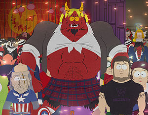

Diablo (videojuego)
 De: La Frikipedia, la enciclopedia extremadamente seria.
De: La Frikipedia, la enciclopedia extremadamente seria.
De la serie Videojuegos:
Diablo (videojuego)
| Desarrollado por:
|
Los mismos que el warcraft
|
| Distribuido por:
|
Yo
|
| Diseñado por:
|
Un mono con una máquina de escribir
|
| Motor
|
2.200 bi Turbo a NO2
|
| Género(s)
|
Rol, rol, rol, la botella de rol
|
| Fecha de lanzamiento:
|
En el año de maricastaña
|
| Modos de juego:
|
Multijugador,un jugador,y jugador trino
|
| Requisitos:
|
Ratón, ordenador, monitor y esas cosas
|
| Disponible en:
|
pote
|
| Formatos:
|
Cederrón
|
| Edades:
|
De 7 a 91
|
| Puntuaciones:
|
Micomanía: 10/10
|
¿Ya lo jugaste?
Juego de Rol de ordenador que fue muy famoso. En la primera versión podías ser un guerrero que capaba a los monstruos herejes de mierda, y destruía y violaba todo lo que se movía ; Una arquera que mandaba flechas por correo aéreo que hacían mucha pupita sexuar y un hechicero que no hacía nada ,porque le duraba el maná lo que dura una pastilla en una discoteca . El enemigo principal era Diablo (obviamente).Esta parte fue famosa porque los personajes iban andando con calma ,modorra y relajación ,aparte de que solo hablaban inglés .En la segunda versión se cambiaron los personajes por la Amazona que tiraba flechas a todos lados y dejaba bien cachondo y bien muerto a todos , el desnutrido Nigromante que hacía esqueletitos y zombies más feos que él, el paladín (a la taza) que rompía cabezas de monstruitos con un palo con una corona encima, la hechicera ,que hace bonitos fuegos artificiales ,y el bárbaro ,que mataba a todo bicho/muerto viviente cantando jotas de su tierra natal. Con la expansión se viene la Asesina, una japonesa oriental que hacía trizas a quien se le viniera encima (se sospecha que salió de alguna historieta Hentai), y el Druida que invocaba lobitos ,ositos y cuervecitos como diría Ned Flanders. También se convertía en un hombre lobo y tiraba pedruscos ardiendo que mandaba todo al carajo. En este juego el enemigo es también Diablo pero estaba acompañado de sus tocacojones aguafiestas hermanos Baal y Mefisto.
Personajes de la trama:
 Aqui apreciamos el Diablo en todo su apogeo
Diablo, señor de la winrar y se lo metió en la cabeza,ya que no tenía otro sitio mejor. Después de un par de años, Diablo empieza a calentarle la cabeza al héroe ,el cual empezó a oír unas voces ,que luego descubrió que no eran sus ladillas así que el héroe decide ignorarlo como si de testículos de Jehová se tratase. Pero finalmente Diablo logra que el héroe empiece a ceder cuando logra a través de los poderes infernales quemar su puticlub favorito en donde pasaba largas horas llorando como un gótico en Navidad.Así que empieza a torturarlo con pesadillas aterradoras dejándolo muy estresado, con insomnio y traumatizándolo tanto que se convirtió en psicópata.
Sus otros dos hermanos eran Baal (al que el culo huele mal) señor de la zoofilia y Mefisto, señor de la prospección anal, que guardaba un gran parecido con Bush.Estos dos personajes también les acaban dando pa'l pelo ,aunque para cargarse al Baal hizo falta una expansión,donde se lo cargaba en las tierras de los Bárbaros , Huescarrogath.
Aqui Nacen los Misticos y alkolicos guerreros de un clan cachondo viola amazonas y q jalaban con gheed en los campos de mariguana
en la fortaleza del pan con queso, los famosos Lhs, mas conocida como la hermandad sagrada, ellos se encargarian de que diablo y sus hermanos les lamieran el culo y les facilitarian las perras para joderlas a embestidas en el ano.
Historia:
En el Diablo I, en una ciudad llamada Tristán en donde todos estaban tristes había un arzobispo , el cual vivía feliz en su capillita,rezando ,y con un monaguillo debajo de la sotana.Pero un buen día fue atacado por Diablo ,que se aburría, y aunque le echó hagua bendita, Diablo le dio con la pila bautismal ,dejándolo trastocado.Entonces Diablo enloquece al Rey de la zona, que se dedica a matar al pueblo. Su hijo es secuestrado por el Arzobispo,para darle a soplar la trompeta del arcángel y cuando el rey la palma y llega la república, sale de la iglesia un montón de monstruitos que matan, saquean , violan ,y porculizan a los lugareños de la ciudad .Un día un héroe se fue a la iglesia con muchos ajos, rosarios y rezando a la Virgen de las angustias para pelear contra los bichitos satánicos con los que se encuentra. Pero después de tantas aventuras se va a lo más profundo de las alcantarillas y encuentra a Diablo, lo vence, lo encierra en un cristal y ese cristal se lo mete en la cabeza,así sin pensárselo ni nada.
En el Diablo II, Diablo hace mierda a Tristán y libera a sus hermanos Baal y Mefisto y empieza a molestar, pero Tyrael el ángel, con la ayuda de un mortal con poderes bien chulos se propone una campaña para dar por el culo a los tres demonios.
Características de los personajes:
Paladín
- Siempre tiene un dibujito debajo de sus pies (la mayoría de formas redondas) las cuales se cree que supuestamente le da algo bueno al paladín y a su equipo o algo malo a los maléficos bichos esbirros demoníacos, ninjas o maléficos ninjas esbirros demoníacos,en especial a Rakanishu(en la imagen,bailando una muñeira con su hacha de castrar) , y a Ismail ,mano vil,que son los enemigos más finos del juego (el último por el nombre).
- Pegarle a cualquier demonio de las dimensiones de un mercancías (o un trinchante de mierda, según la zona) con el escudo, dejarlo apijotado y huir como metrosexual de un bar de heavys.
- Rezar al Gran monstruo del espagueti Volador por las almas de sus enemigos y después abrirles el tórax, arrancarles el corazón, comérselo y promocionar sus cereales a base de corazones de demonios , y si no, morir en el intento, que oye , por lo menos lo intentaste.
- La mayoría de los paladines suelen tirar martillitos giratorios que suelen desaparecer cuando choca con una pared. Se rumorea que estos martillos sirven para matar a sus enemigos pero se ha comprobado que solo sirve para gastar maná, aparecer, girar, chocarse contra una pared y desaparecer en unos segundos.
Bárbaro
- Un buen bárbaro siempre debe estar vociferando gritos contra sus enemigos que sea cuestionando a sus madres, cuestionando su sexualidad,Insultandolo con palabras racistas y dejando en claro su falta de esta o bien de índole antisemita. Esto ultimo confirma que la raza de los bárbaros son más bien una subespecie de Skinhead/Falangista, además de que están rapados y solo saben hablar (mejor dicho rugir) no más de treinta palabras.
- Los bárbaros también gritan para beneficiar a su equipo cosas como "Viva Franco", "Arriba España", "Hitler es nuestro ídolo sexual de la infancia" o "Viva Ángel Acebes".
- El modo de lucha de un bárbaro siempre es el tradicional ,espectacular y efectivo modo de repartir hostias por doquier mientras gritan cosas incomprensibles para la cualquier humano o delfín.Si su modo clásico no funciona, la mayoría de los bárbaros suele cambiar a una táctica arcana que consiste en girar como un remolino para que sus golpes sean más poderosos y sus blasfemias menos comprensibles. Si esta técnica no funciona o se marea demasiado, entonces el bárbaro de turno pasa a la técnica final:Llorar y patalear como un bebe, lo cual produce la hilaridad del monstruo ,que no puede luchar, y el bárbaro aprovecha para practicarle una lobotomía en vivo con un hacha de guerra, o una espada que te cagas
Hechicera
- Las hechiceras,aparte de mas curvas que el circuito de Montmeló suelen siempre tener tres tipos de hechizos mágicos elementales para joder y rejoder: los hechizos elementales de fuego, los hechizos elementales de hielo y los hechizos elementales de rayo.
- Las hechiceras tienen cuatro formas distintas de transportarse: caminando, corriendo, teletraportándose y en taxi. El ultimo es el más rápido que tienen pero como no tienen dinero lo tienen que pagar con su cuerpo por lo que llegan al destino prácticamente en bolas.
- Las hechicera suelen llevar consigo cosas como báculos, palitos con una bombilla encima y consoladores de triple acción perforadora pero esta ultima arma ha sido censurada por la organización HLPS (Hinchamos Las Pelotas Soberanamente).
Nigromante
- Son escuálidos, góticos, pegan y chillan como niñas y para colmo maricones. Personaje recomendable para ponerle una bomba y tirarlo hacia los enemigos para que exploten y mueran por nuestro buen régimen comunista.
- Una de las grandes características de un Nigromante, además de llorar como niñas todo el tiempo, es el poder de sacar de los cadáveres de los enemigos muertos esqueletos guerreros, esqueletos magos y esqueletos con carne (vulgarmente llamados zombis) así como arreventarlos , lo cual no tiene mas utilidad que llenarse de vísceras y sangre hasta las cejas.
- El nigromante también puede joder sacando paredes de huesos o cosas por el estilo. Obviamente este tipo de cosas no le sirven más que para joder a sus compañeros encerrándolos juntos a los enemigos y huir al grito de "Me rompí la uña del meñique, pelea tú mientras voy al hospital de emergencias".
Druida
- Los hippies del grupo, usan lo que ellos llaman la fuerza de la naturaleza, lo que nosotros conocemos como droga. Creen invocar fuerzas naturales, bestias y plantas salvajes y espiritus homosexuales del bosque pero solo estan bajo los efectos de la droga.
- Se pueden convertir en hombres lobos para escapar más rapido de la situación o en hombres osos para afeitarse la piel, hacer con ella un abrigo y darcelo a Mefisto para ver si este les regala un lindo item.
- "¡Eeeeeeh, estoy reloco bolooooo!", frase favorita de un druida.
Asesina
- Especie de oriental lesbiana que da patadas, ataca con con garras como si fuera el chico manos de tijera y entregan finalmente el culo(para q la violen) cuando todos sus compañeros la dejaron sola con la hordas de demonios. Las asesinas tiene un gran problema al elegir mayoritariamente como compañero de aventuras a un nigromante, valla a uno a saber porque.
- Las asesinas, ademas de ser altamente violables
(por todas partes...), dejan trampas por doquier que solo sirben para matar a sus compañeros en duelos pero a la hora de enfrentarse a demonios, muertos vivientes y vacas no sirven de una mierda.
- No confundir, las asesinas pueden parecer una especie de niñas emos pero ellas en ves de cortarse las venas dan patadas por doquier y, a diferencia de un emo, una asesina puede servir para algo.
Amazona
- Usa lanzas, arcos, espadas.
- Es de las personas que te piden ayuda y nunca hacen nada solo cuando la degas sola te ofrece que la folles para seguir acompañandola o cuando esta rodeada de hordas de demonios s
e desnuda y entrega todo su cuerpo para q la follen
- Es una loca con enormes tetas q solo lo que le gusta en follar desenfrenadamente con todos los demonios, tipos, cualquier ser que pasen por ahi.
- Es la puta del Diablo al igual q la Summoner en el Mu y la Seraphin del Sacred.
- Su habilidad especial es darte tremendos golpes con sus tetas y cuando ya te dega noqueado violarte
- Si la miras figamente a sus pechos te podes morir porque te viene un infarto igual que si miras a chuck a los ojos...
- Algunas personas dicen q ahi un nivel Secreto que vez a una amazona desnuda y que la tenes que violar porque si no te borra la partida y te encaga un virus...
Enlaces externos
Autor(es):
- Krusher
- Nexo
- Kenedhor
- Haakjvork
- Doctor grijander
- Sir Vientre
- Frikiman
- Aque
- Masterfriki
- El Sevillano
Frikipedia 2005-2016, Licencia
GFDL 1.2 - Extraído por FrikiLeaks